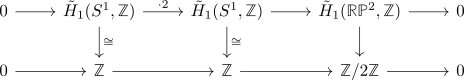
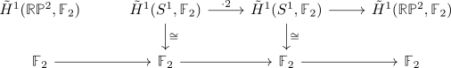

nontrivial map from RP2 to S2 is an f2 cohomology isomorphism
Proposition
Let
\begin{align*}
S^1 \xrightarrow{\cdot 2} S^1 \rightarrow \mathbb{R}\mathbb{P}^2 \rightarrow S^2
\end{align*}
be the coexact puppe sequence. Then the map $\mathbb{R}\mathbb{P}^2 \rightarrow S^2$ is an isomorphism on \(\mathbb{F}_2\)-cohomology
Proof
warning:
- confused rambling
- should be simply the long exact sequence and use that stuff is additive (in particular, the $\cdot 2$ map is preserved) & 2-torsion (hence the $\cdot 2$ map gets mapped to the zero map)
Look at the long exact sequence of homology

Then we may pass to \(\mathbb{F}_2\)-coefficients and get the long exact sequence
